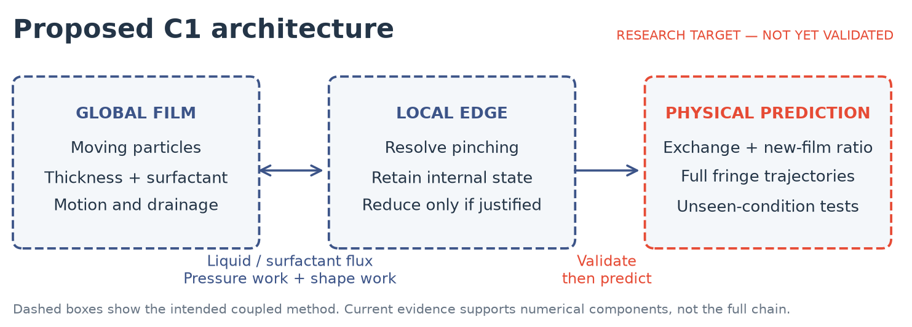
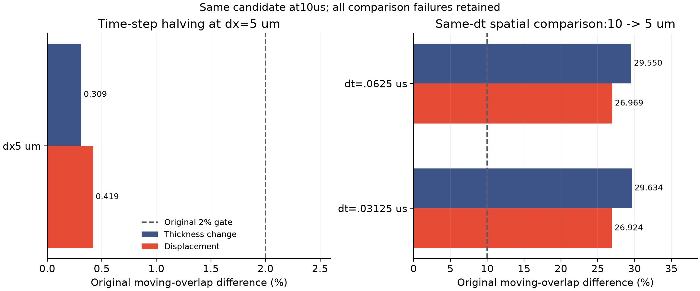
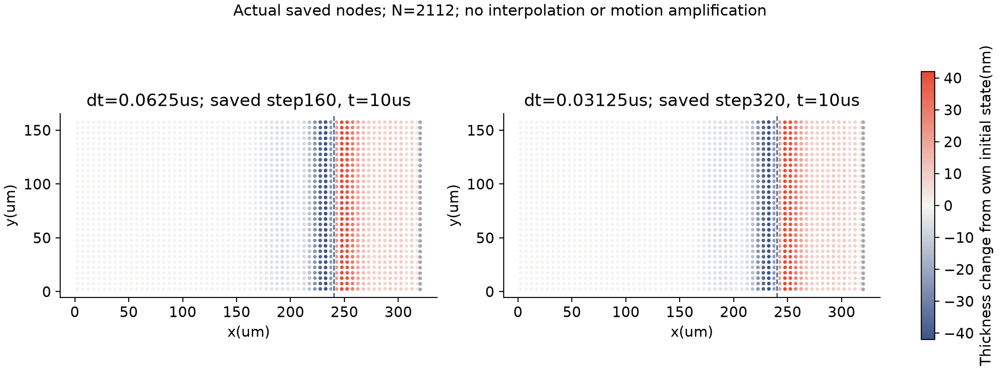

起点：从整体条纹差距，回到边缘交换
继承模型已有动态厚度、热力学和排液计算，但不能把已有框架或视觉效果重新算作本项目贡献。主问题转向未解析边缘能否提供独立、可验证的边界预测。原规划 · 实验目标
原始 idea 一直没有变：解析边缘如何夹缩、交换液体并生成薄膜元，进而解释整张膜的排液。探索过程中，方法逐渐收敛到一个更具体的候选：保留必要内部状态的局部边缘，与运动粒子膜守恒耦合；只有证据支持时，才把局部区域缩减成便宜的边界算子。
这篇综述把研究问题、方法演变、文献边界和实验结果放在同一条证据链里。它是对已有记录的整理，没有新跑模拟，也没有把候选创新升级成已证明的首创。
局部边缘 → 守恒交换 → 整体条纹与排液；C2界面恢复和C3黑膜依证据推进。
边界响应、非线性接口、运动膜账本、独立审计，以及同候选时间／空间对照。
最新空间差异仍约30%；独立物理交换预测、整体轨迹和保留工况验证未完成。
皂膜中央很薄，边缘连接着较厚的弯月面。边缘附近的夹缩与液体交换，可能不断生成更薄的膜元，再通过膜内运动改变整体厚度分布。真正要回答的不是“能否画出条纹”，而是：给定材料、装置和初态，能否预测交换量、薄膜元厚度以及等厚条纹的完整下降轨迹？
这对应原规划的C1。C2进一步问界面恢复和表活响应是否改变交换及初态依赖；C3则希望用一致的材料和边界描述，连接排液、再生与动态黑膜。三者是研究目标，不是三个已经完成的贡献。
选择这条路线，是因为均匀加密和旧边界处理没有消除实验差距；但这只能提出“边缘未解析可能重要”的假设，不能据此断言实验差距一定由边缘造成。条纹自相似性是重要外部检验，不能反过来把目标指数写进通量律。[1]

整膜用运动粒子携带厚度和表面活性剂；边缘用更精细的局部膜—弯月面区域解析夹缩、曲率和交换。两者通过同一接口交换液量、表活和功。这个接口不能只是把某一列膜厚设成固定值，也不能只插入一个从实验拟合出来的排液率。
以上是方法需要满足的账本结构，不是对所有现有算例的验收声明。压力驱动的输液功与毛细形变功必须分清；离散功恒等式通过，仍不能替代连续物理法向通量与牵引力的独立验证。
相同的当前边界压差和总液量，不一定唯一决定局部内部厚度形状及下一时刻通量。候选工作名 Stateful Edge Exchange 表达的就是：用显式内部状态描述这种响应，而非先假定一个瞬时通量公式。这里的“状态”有明确变量；若全部模型状态都相同，就不能再凭空引入历史效应。
只有在局部响应足够快、接口误差可控时，才考虑降阶。否则应保留完整局部区域。未来希望根据通量、功和参考误差决定使用何种表示；自动切换和可靠适用域目前尚未实现，也未验证成本优势。有状态输运和保持耗散的降阶都有先例，不能把名称或通用投影本身作为创新。[4][5]
下面按问题之间的逻辑关系组织；部分探索并行进行，并非所有实验都严格按此顺序发生。
继承模型已有动态厚度、热力学和排液计算，但不能把已有框架或视觉效果重新算作本项目贡献。主问题转向未解析边缘能否提供独立、可验证的边界预测。原规划 · 实验目标
液量和表活账本能够检查交换是否重复计数或丢失；运动膜的位移、能量和边界功又暴露出更严格的一致性问题。因此把守恒、动力学精度、几何精度和物理切面重建分开验收。运动接口 · 机械功 · 重映射诊断
在线性毛细条带里比较瞬时基线、慢模态和接口响应模态。响应状态能更准确复现离散参照，但合理修正的慢模态基线也能通过部分标准；这削弱了“只有某种基底才行”的论断。条带缺少弯月面、表活和运动膜，不能把它当成物理边缘再生。状态响应试验与限制
非均匀、非线性局部参考加入了更严格的账本和输入矩阵。只有部分脉冲工况同时满足精度与预算要求；降阶没有显示同精度成本优势。因此保留它作为方法组件，不能用少数通过项包装成通用边界模型。非线性接口及全部失败
曲面几何、实际粒子轨迹、布局敏感性和独立物理切面需要共同检查。通量或牵引力重建存在不相容差异；求解器计时和局部Hessian优化只是让检查可承担，不能自动提供新物理。全域空间检查 · 物理切面重建 · 计算成本诊断
旧实现细时间步算例在第78次尝试失败。诊断发现丢弃正长度短边会破坏一个固定几何反例的闭合；候选保留这些短边，在原标准下通过几何与既有检查，再完成同一候选的20／10／5微米对照。这不是对旧失败现场的精确重放。最新5微米配对通过时间检查，但10→5微米空间差异仍约30%。固定反例 · 候选检查 · 配对结果
候选主贡献：为运动薄膜构建一个有明确状态、液量／表活／功一致性及适用域的局部—整体边缘交换方法，并由局部解独立产生可检验的整体预测。这是希望建立的增量，尚未获得完整证据。
| 已有工作已经覆盖什么 | 本项目仍需证明的增量 | 当前判断 |
|---|---|---|
| 动态膜厚与排液视觉效果：Ishida等，SIGGRAPH 2020。[6] | 边缘解析与整膜交换的定量可信度，不能仅是厚度场随几何变化。 | 继承与对照；厚度场本身不作为新贡献。 |
| 膜供液会改变弯月面，且已有膜—弯月面耦合分析：Vigna-Brummer等，2025。[2] | 从局部状态得到整膜可用的交换，而非只改变一个弯月面半径。 | “动态弯月面”这个概念已有先例。 |
| 2026年工作独立测量交换系数，并研究稳态／瞬态。[3] | 冻结材料和几何后，从局部解预测交换系数、薄膜元厚度比，并对外部工况检验。 | 尚未完成；不能先输入文献系数再称为预测。 |
| 弯月面周围的表活输运已有约化模型：Grassia，2022。[4] | 不同于已有状态变量的地方，须落实到本项目局部—整体接口、输出及适用范围。 | “有记忆／有状态”本身不足以声明首创。 |
| 保持被动性和结构的降阶已有成熟方法：Gugercin等，2012。[5] | 对本问题在同精度下是否更便宜，何时必须保留完整局部区域。 | 复用已有数值思想；当前没有证明加速。 |
| 可溶表活、多场自由能与吸附／解吸通道已有梯度动力学框架。[7] | 适用于自由皂膜的独立界面响应依据，以及对边缘交换的可辨影响。 | C2是有条件的物理扩展，不能仅凭增加速率参数构成创新。 |
这是针对已查文献的贡献边界，不是穷尽检索或优先权证明。图形学移动膜、ALE及边界降阶仍需逐式对照；不能仅凭关键词缺失断言新颖。短边修复、局部Hessian、矢量化和审计工具均属于支撑工作，除非另有独立方法证据，不列为核心科研创新。
C2只有在独立张力响应和时间尺度证据支持时，才加入有限速率交换；若合理参数下迅速回到平衡且不影响输出，就不保留为主贡献。C3要求在相同材料与边界下完成SI黑膜和动态转变验证；定性黑斑、预设种子或单张渲染不能替代它。原范围仍保留，但论文主张必须随证据决定。
| 已执行的检查 | 实际结果 | 能支持／不能支持什么 |
|---|---|---|
| 线性边缘响应 | 18次尺度化运行；接口响应基底相对离散参照最大通量差异约0.068%。DC修正慢模态最大约3.006%；两个阶跃时间加密检查仍失败。 | 支持保留状态的数值架构；不代表18个独立物理验证，也不证明弯月面机制或绝对优势。完整记录 |
| 固定几何非线性接口 | 3组工况同时满足预算与时间／空间要求；其他失败保留，降阶未显示成本优势。 | 局部数值组件获得证据；不能外推为运动二维再生、全参数稳健或可用加速。完整记录 |
| 独立物理切面 | 已做SI压力／速度切面恢复，重建与原生离散量仍有差异。 | 离散公式核对与连续物理验证必须分开，后者未通过。诊断 |
| 最新5微米同候选配对 | 2112粒子，两组共480步、失败0；18＋18项保存状态独立审计通过。时间差异0.309%／0.419%，通过2%。 | 支持此10微秒窗口内的求解完成和时间一致性；不能代表空间收敛。 |
| 同候选10→5微米空间比较 | 两时间步的膜厚差异29.550%／29.634%，位移差异26.969%／26.924%，均未过10%。 | 当前仍有空间关卡。差异缩小不能当作收敛阶或实验误差。原范数与原始数据 |


负面结果也决定方法选择：瞬时基线在该条带矩阵中不够好，但这不是现实皂膜必须带记忆的证明；同精度降阶没有成本优势，就不能用“状态更少”替代计时；短边候选算完细粒子配对，也没有消除空间误差。研究应保留这些限制，而不是不断换一个更容易通过的检查。
若干局部响应和守恒接口原型；运动膜账本和独立保存状态审计；几何短边候选及同程序时间／空间比较；可追溯的失败和下载归档。
状态化局部边缘—整膜耦合；由接口误差决定的降阶适用域；独立交换系数和薄膜元厚度比；对整体条纹时间尺度的解释。
完整C1完成、参数无关、首创、已证明加速、已预测实验、已形成可信动态黑膜；这些都缺少相应证据。
这是依证据排列的后续验收顺序，不是已经启动的新计算计划。长期目标仍暂停，半小时批次心跳已在上次交付后关闭。
2026-11-18复核下列公开一手文献页面／作者摘要；此处为释义，不重发论文PDF。部分出版社页面受访问限制时采用作者公开版本。结论范围见各原报告和本页本地来源哈希。
原规划、假设与实验包 · 状态响应与公平基线 · 非线性接口 · 运动膜全域检查 · 连续物理切面 · 最新配对、PNG／PDF与原始下载 · 旧失败现场